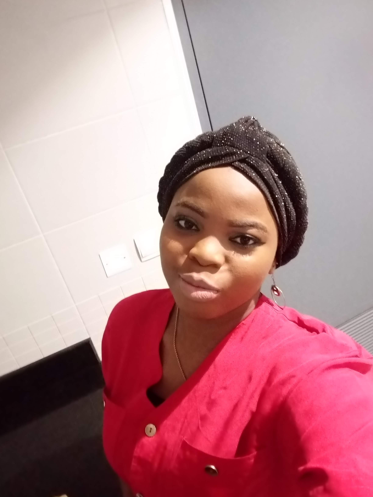

Home
About
Contact

Simple App Build.
Weather Application
E-commerce Clothing Store
E-library
Women HelpLine
Professional Interest
Adeniye kehinde is a technology advocate who is passionate about learning and have great interest in continous career growth and development.
As a highly-skilled and self-driven IT professional, I am adept to executing any duties associated with the role currently at Tek-Experts, where I worked as an Azure Application Support Engineer(Dev and OSS).
Delivered advanced technical support solutions to corporate customers using Azure Web Apps, Azure Function Apps, Azure DevOps engineering. I have solid experience with global technology implementations (Cloud and on-prem).
I ensured that the company's high standards were always fully met and I also support and handles public DNS configuration,global request routing, TLS termination, HTTP content caching, and internal service routing for the public services for the application hosted on Microsoft Azure.
On top of that,
Delivered advanced technical support solutions to corporate customers using Microsoft Azure Services by troubleshooting, isolating and resolving complex application deployments issues.
Support the company's on-premise applications to cloud environments and comfortable working with a very technical customer base and providing a wide range of support, from simple issue resolution to end to end on-boarding
Troubleshooting and working on the development of new automation tools and other deployment operations for clients automation,containers, and orchestration tools below.
- Kubernetes
- Bash scripts
- PowerShell
- Terraform
- Docker/DockerSwarm
- Ansible
- Puppet
- Python/Django
Configured and maintained pipeline framework and provided system support and beneficial technical assistance to clients.
Microsoft Azure Cloud operations,Automation and deployment with Kubernetes, Terraform, ARM Templates, Webjobs, Github.
Collaborated and worked closely with managers and executives and completed various administrative tasks, maintaining client's application solutions, keeping customer experience, performance and security prioritized .
Furthermore, I am a Certified App Service developer support, Certified Azure DevOps support engineer and a certified AWS Cloud Practitioner with exceptional analytical skills and the ability to think critically and solve complex problems.
Finally, I would appreciate the opportunity for an interview to discuss the job in more detail. I can be reached at +2347088683373 or via email at kehindeafusat@gmail.com.
Referenced Links:
Github
LinkedIn
Medium